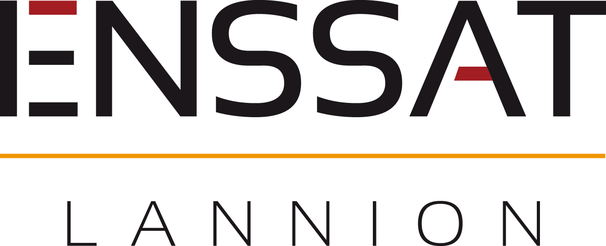
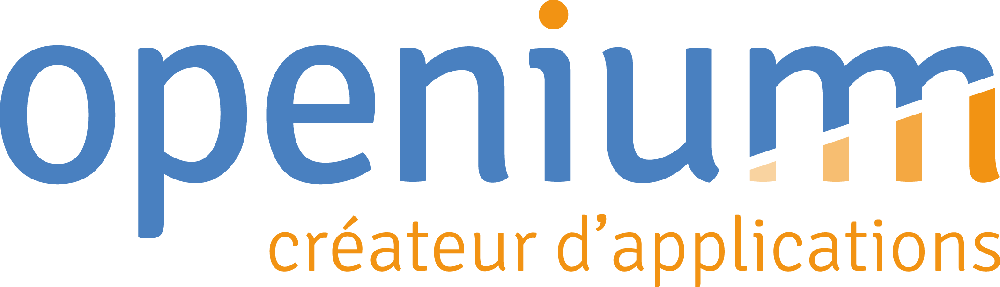
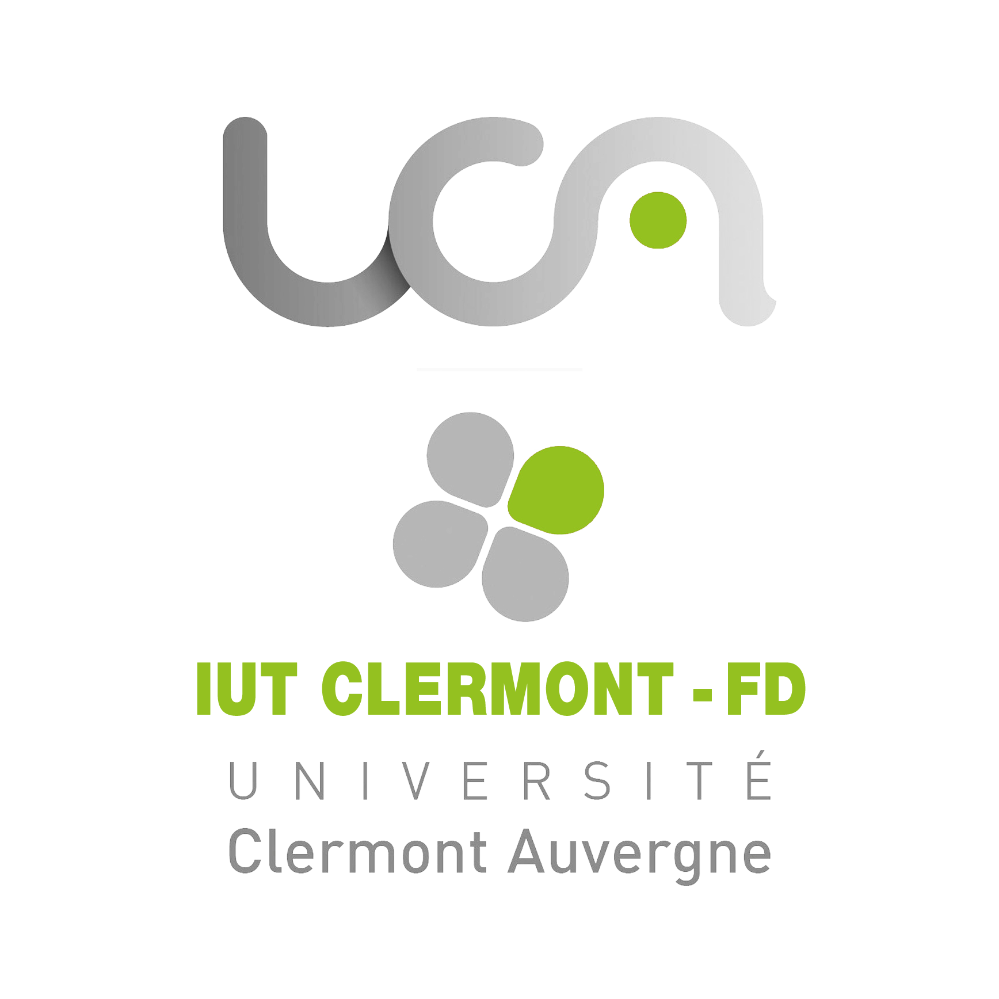
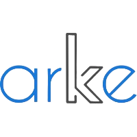
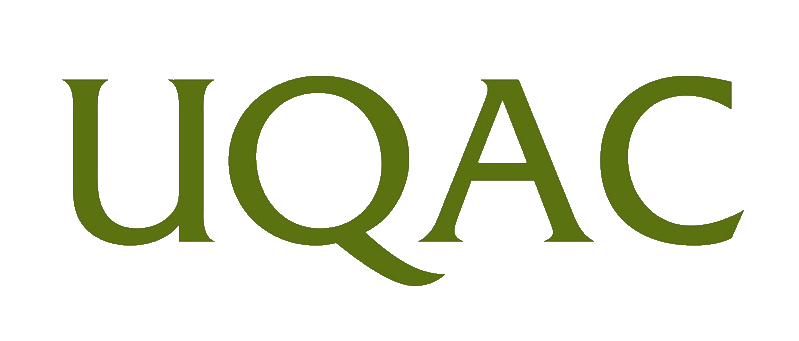

Engineering diploma in computer science.
From September 2021 To September 2024
An engineering diploma in computer science.
This diploma is focused on multimedia science, networking and
software development

An engineering diploma in computer science.
This diploma is focused on multimedia science, networking and
software development


A vocational diploma as an apprentice in mobile development.
Focused on android, Ios and cross-platform development.
This diploma also focus on embedded development and IoT environment.


An international term aboard to complete my two-year diploma specialized on computer science.
A two years diploma specialized on computer science. It focused on the basis of computer science from web development to software architecture.